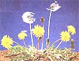
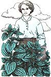

HERBS AND REMEDIES
Two powerfully healing herbs you might have overlooked.
E arly each spring, as soon as the frost left the ground in my childhood home of Maine, dandelion greens began to sprout, and before their early spring blooms appeared, my grandmother would be out in the yard harvesting the tender young greens.
"A spring cleanser," she said.
She let the greens soak in water overnight to remove the bitterness, then boiled them like spinach. A complement of vinegar, sprinkled over the steaming hot greens, made them a perfect addition to dinner for a week or two each spring. As soon as the flower buds began to form at the crown of the root, she stopped harvesting them.
"Too bitter now," she would always say.
Dandelion is difficult to categorize. We think of it as a weed, sometimes a vegetable, but dandelion an herb? Certainly. What is an herb? Any plant used for culinary, fragrant, or medicinal purposes, according to my Webster's . Of course, it is so common, so pervasive, and so familiar, our association of dandelion is mostly that of weed. But while best known as something to rid from a lawn, it is used for both food and medicine and, therefore, is an herb.
Dandelion is known to botanists as Taraxacum officinale , an extremely variable biennial or perennial herb species. Over 100 different variations of this simple herb have been described by European botanists. Probably native to Europe, it is widespread throughout the northern hemisphere. Wherever humans find home, so does the dandelion. The stemless leaves arise from the crown of the root in a rosette. The flower heads, those crowded familiar yellow blooms, are actually a "composite" of hundreds of tiny flowers packed together, rather than a "single flower." It is a member of the aster or composite family.
Leaves are best harvested when they are still tender and sweet, and are at their best during the first year of growth. Leaves harvested after the plant buds tend to be bitter and tough. Like her mother before her, my grandmother was right. If you harvest dandelion leaves from your lawn or yard, you will want them early in the spring before the flower buds. Dandelion leaf growing is actually a small commercial industry. As a specialty crop for fresh leaf production, three to four million dollars worth of leaves are grown each in Texas, Florida, Arizona, California, and especially, New Jersey. Who would have thought?
What can you do with dandelion in the kitchen? For the freshly harvested leaves consider dandelion boiled greens, dandelion spaghetti, dandelion quiche, dandelion lasagna, dandelion bread, and dandelion pizza, to name a few. The flowers also offer an interesting array of possibilities from wine to jams. These are just a few of the gastronomic possibilities to be found in, yes, you guessed it, a cookbook devoted to the subject. Interested in more? See: Peter Gail's Dandelion Celebration : A Guide to Unexpected Cuisine (Goosefoot Acres Press, P.O. Box 18016, Cleveland Heights, OH 44118).
How about nutritional value? Dandelion fresh leaves contain protein, fiber, calcium, phosphorus, iron, potassium, thiamine, riboflavin, vitamin C, and are especially high in vitamin A. The dried leaf is high in potassium (about 4%). According to Dr. Gail, dandelion leaves rank ahead of both broccoli and spinach in overall nutritional value.
Both the leaves and roots of dandelion are used in herbal medicine. Traditionally, both dandelion leaf and root have been used for liver, gallbladder, and kidney ailments, and as a tonic for weak or impaired digestion. They are also considered mildly laxative. The dried root is believed to have weaker activity than the fresh root or its preparations. In modern European herbal medicine (called "phytomedicine"), the leaves are used for conditions involving water retention resulting from various causes. Experimental data confirm that the leaf has a significant diuretic action, and because of its high potassium content, the leaf replaces this mineral lost through the urine.
Traditionally, the root has been used for the treatment of rheumatism. It has been shown to possess antinflammatory activity, perhaps providing a rational scientific basis for its historical use in treating rheumatism. Its primary modern use is for conditions associated with bile secretion in the liver, as well as dyspepsia and loss of appetite. Alcoholic extracts of the root increase bile secretion in animal models by over 40% according to a scientific review on dandelion produced by the European Scientific Cooperative for Phytotherapy. They also note that the root has experimental weight-loss activity due to its diuretic actions and is weakly antibiotic against Candida albicans .
Timing of harvest affects root quality. Summer-harvested roots (June-August) produce a less uniform product with lower content of biologically active bitter principles. Late September-October harvest is preferred. If an extract is made from the roots, the fall-harvested roots make an opaque extract.
Spring-harvested roots (lower in inulin and other bitter principles) produce a clear extract. In Germany, where herbal medicine reaches its highest scientific state of development in a Western industrialized country, dandelion root (with herb) and dandelion leaves are allowed by the German health authorities to be labeled for medicinal purposes. Use is allowed as a diuretic, for treatment of loss of appetite, dyspeptic problems, and disturbances in bile flow. Dandelion products are contraindicated in the treatment of obstruction of bile ducts and certain gallbladder conditions. However, they may be used for supportive treatment of gallstones, under a physician's supervision. Incidentally, all medical students in modern Germany are required to take a certain number of course hours on herbal medicine, and a section on the subject is now part of Germany's licensing exam for physicians.
Another neglected weed that becomes a springtime herb of choice is stinging nettle (Urtica dioica). Stinging nettle is native to Europe, Asia, as well as North America.But the North American material differs from the typical European Urtica dioica by possessing male and female flowers on the same plant. Here in the US., we have four species of stinging nettles (with two subspecies and six varieties). The typical European form has been introduced here and is sporadically naturalized in North America.
I didn't know how to identify the plant when I first encountered it, but soon learned the hard way. With shorts on one Maine summer I was walking through a pasture and the leaves, loaded with nettle. Their stinging hairs, grazed my legs, creating tiny stings much like an ant bite. The leaf and stem hairs are like tiny syringes. When they come into contact with the skin, the tips break off, injecting their chemical mix containing histamine, small amounts of formic acid, and other chemicals into the skin. The resulting burning sting can last for an hour or more.
Upon drying or cooking, the stinging compounds dissipate, and freshly cooked nettles make a delicious and nutritious spring green. The fresh plants should, of course, be handled with gloves. Harvest the spring shoots in May or June, before nettles begin flowering, for a tasty pot herb. The dried herb can be sprinkled in salads, soups, vegetables, and other foods for a subtle salt flavor and a rich supply of iron, magnesium, potassium, calcium, vitamin A, protein, as well as dietary fiber. In fact, nettles were once grown as a fiber plant in Europe. They contain about 15% fiber by weight that can be processed into a soft, flexible textile said to feel much like silk.
Herbal traditions hold that the leaves have mild diuretic properties and are "blood building." Experimentally, the dried leaf tea reportedly increases blood hemoglobin. Diuretic activity has been confirmed by both laboratory studies and a human clinical study. Nettles are also thought to help stimulate blood circulation and have been used as a spring tonic to clear chronic skin ailments. In Europe, nettle leaf tea or extracts have also been used for the treatment of skin eruptions such as eczema.
In modern German herbal medicine, an average daily dose of about one-third ounce of the dried herb is used for supportive treatment of rheumatic conditions, and inflammation of the lower urinary tract. A recent double-blind study also showed that freeze-dried nettle extract produced positive, though limited, results in the treatment of allergic inflammation of the nasal cavity.
The root is also the subject of modern research. An alcohol extract from nettle roots was recently reported to lessen the number of times that men over of the age of 60 suffering from benign prostatic enlargement (benign prostatic hyperplasia) had to urinate during the night. The treatment was found to be most effective in mild cases. Therefore, the German government allows preparations of the root for symptomatic relief of urinary difficulties associated with prostate enlargement.
So, think twice when you see the lowly weeds. Perhaps we should think of them as "herbs," rather than plants to be eliminated by herbicides.
|
 This tough opponent of backyard lawn tender is also a healing herb for over a dozen ailments. |
 Stinging nettle has been used to treat both skin and uninary problems. |
|